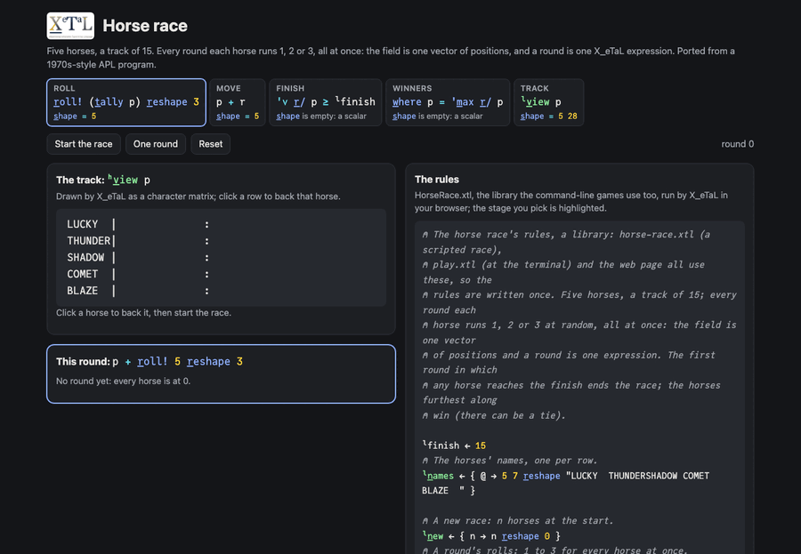
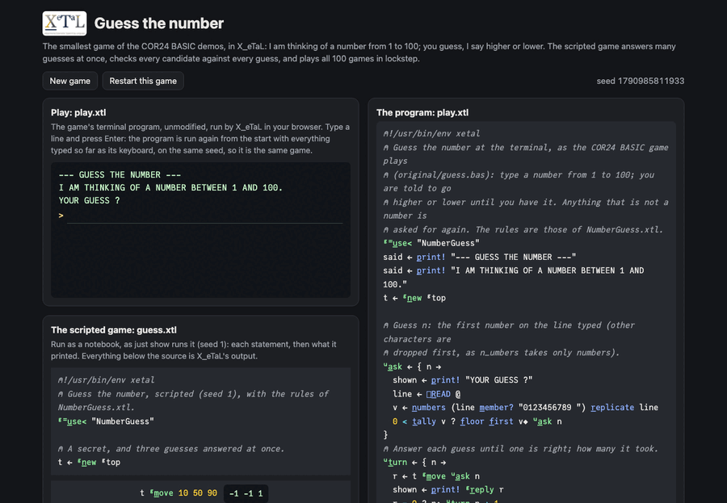
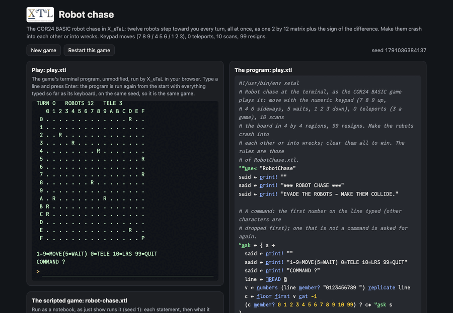
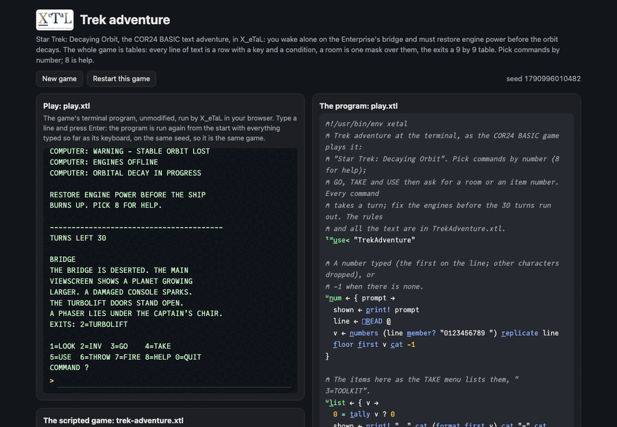
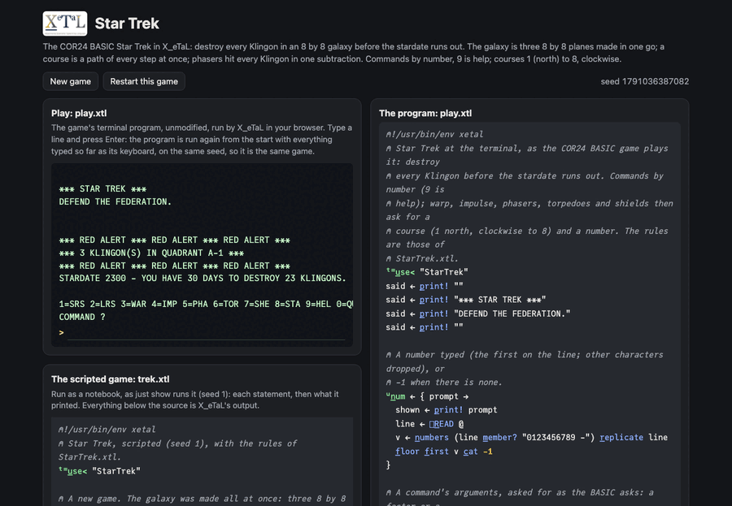
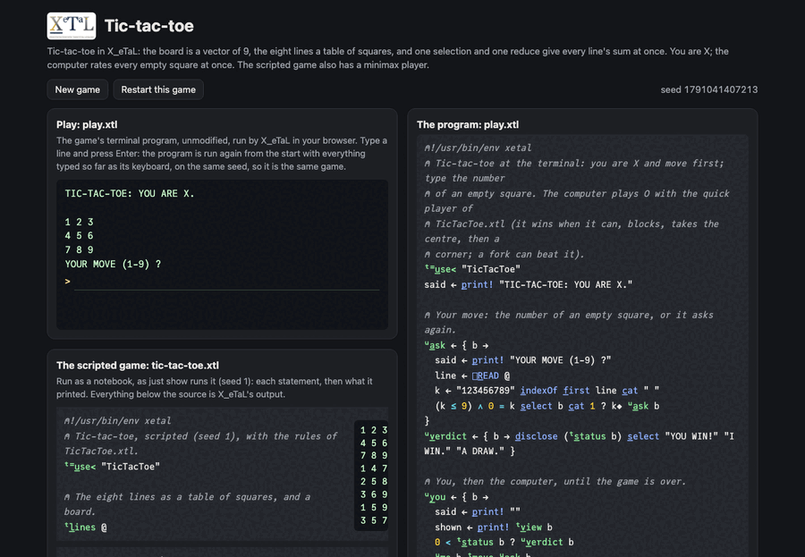
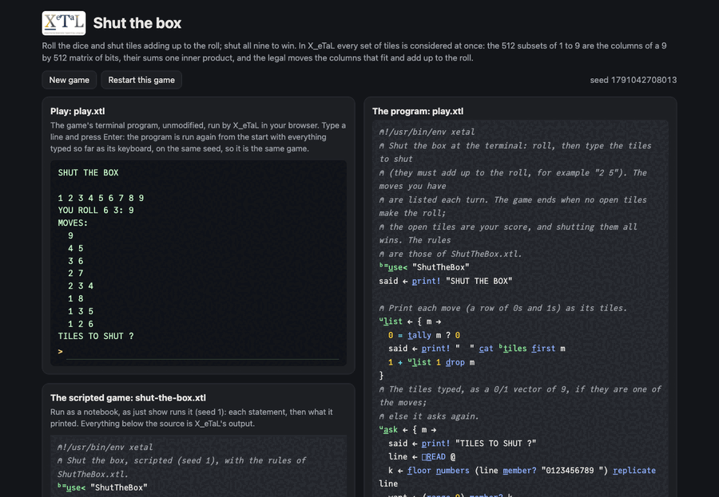
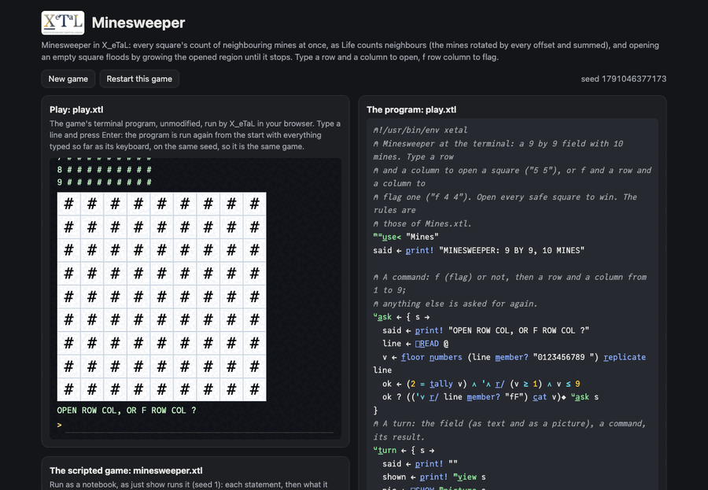
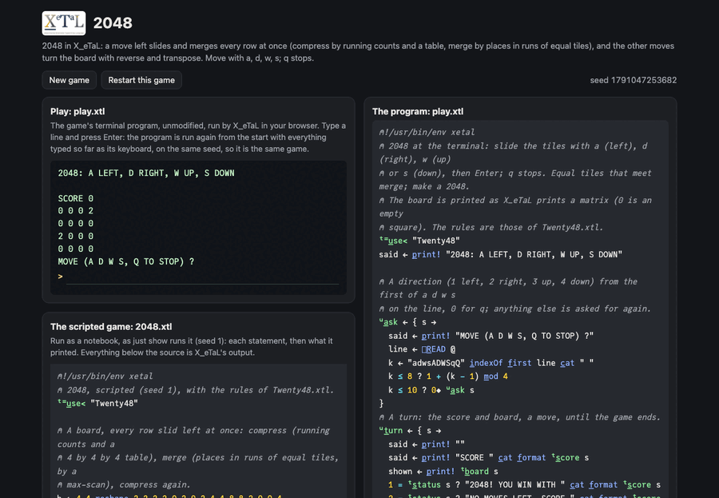

Live
Horse race
vectors, random rolls, reduction
Five horses race to 15, each running 1, 2 or 3 a round, all at once. The field is one vector of positions and a round is one expression; the track is a character matrix drawn by a table. Bet on a horse at the terminal.
vectorsr_oll!reducew_heret_ablelibraries

Live
Guess the number
comparison tables, masks, playing every game at once
The smallest COR24 BASIC game, at a terminal: higher or lower until you have it. Its scripted game checks every candidate from 1 to 100 against every guess at once, and plays all 100 games in lockstep.
r_oll!t_ablereducemasks[]R_EADlibraries

Live
Robot chase
coordinate matrices, simultaneous motion, collision tables
Twelve robots chase you across a 16 by 16 board and you make them crash. Every robot steps at once: the robots are one 2 by 12 matrix and a turn adds the sign of the difference; crashes are found by a table of every robot against every other.
matricessign by comparisonst_abler_eplicatereduce on rank 4g_radelibraries

Live
Trek adventure
tables, masks, a state machine as data
Star Trek: Decaying Orbit, a text adventure: restore the Enterprise's engines before its orbit decays, past a locked armory and Klingon boarders. No branching code for the story: every line is a row of a table with a key and a condition, a room is one mask, a turn updates the state vector.
string tablesmasksw_herem_ember?t_ablefunctional updatelibraries

Live
Star Trek
planes of a galaxy, paths as matrices, windows, masked updates
The classic: destroy every Klingon in an 8 by 8 galaxy of 8 by 8 sectors before the stardate runs out, with warp, impulse, phasers, torpedoes and shields. The galaxy is three planes made at once, a course is a whole path at once, and phasers hit every Klingon in one subtraction.
8 by 8 planest_able pathsw_here first hitwindows by indexg_rade permutationsr_avel_2libraries

Live
Tic-tac-toe
a 3 by 3 board, line extraction by indexing, minimax
Three in a row against the computer. The eight lines are a table of square numbers: used as indices into the board it gives every line at once, and a reduce gives every line's sum. The computer rates every empty square at once; a minimax player searches by recursion.
index tablesreducem_ember?t_ablerecursione_achlibraries

Live
Shut the box
boolean masks, every subset at once, subset sums
Roll the dice and shut tiles adding up to the roll; shut all nine to win. All 512 subsets of the tiles are one 9 by 512 matrix of bits, their sums one inner product, and the legal moves are the columns that fit the open tiles and add up to the roll.
e_ncodei_nnermaskso_\ transposes_elect_2libraries

Live
Minesweeper
neighbourhoods by rotation, flood fill to a fixed point
Open a 9 by 9 field without touching its 10 mines. Every square's count of neighbouring mines is computed at once, as Life counts neighbours, and opening an empty square floods: the opened region grows ring by ring until it stops.
o_-_12 rotationsreducemasksfixed pointg_rade[]G_RIDlibraries

Live
2048
compress, merge, pad: composition; turning the board
Slide the tiles of a 4 by 4 board; equal tiles merge; make 2048. A move left slides and merges every row at once: compress by running counts and a table, merge by each tile's place in its run, found by a max-scan; the other moves turn the board with reverse and transpose.
s_\ scanst_ablemaskso_\ transposer_ev_2m_atchlibraries